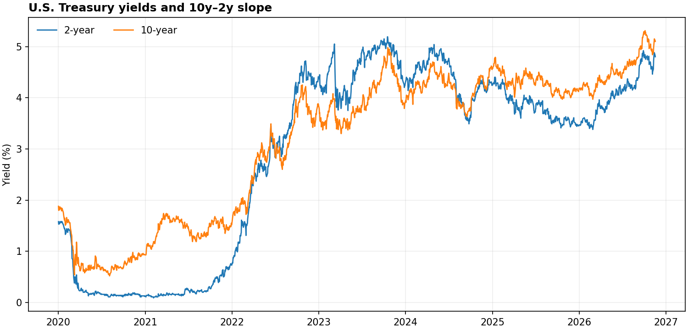

← All studiesSTUDY 01 · PUBLIC DATA
Market & Macro Monitor
Completed descriptive analysis of official daily yield observations.
Not client work. Public-source analysis with stated hypothetical inputs where applicable. Not investment advice.
Observed results
| Source rows | 1,720 |
|---|
| First date | 2020-01-02 |
|---|
| Last date | 2026-11-17 |
|---|
| Median 10y 2y slope (%) points | 0.37 |
|---|
| Inverted curve observations | 541 |
|---|
| Inverted curve share (%) | 31.45 |
|---|
| Max 10y 2y slope (%) points | 1.59 |
|---|
| Min 10y 2y slope (%) points | -1.08 |
|---|

Method
Parse Treasury XML and calculate daily constant-maturity curve slopes; report distribution, coverage and inversion share.
Source
https://home.treasury.gov/treasury-daily-interest-rate-xml-feed
Limitations
- Par yields are indicative curve estimates, not realized bond total returns.
- No macro causal claim or yield forecast is made.
Files
Built 2026-11-18 12:12 UTC from local raw inputs under .cache; raw files are excluded from Git.